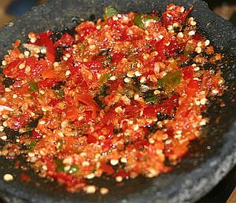

Sambal Bawang

Bahan-bahan:
- Bawang putih 4 siung
- Cabai hijau keriting 4 buah
- Cabai Rawit 4 buah
- Garam secukupnya.
- Minyak goreng 1 sdm
Cara Membuat :
- Kupas bawang putih
- Cuci bersih semua bahan
- Uleg semua bahan dan tanmbahkan garam secukupnya. setelah itu beri minyak,
- hidangkan.